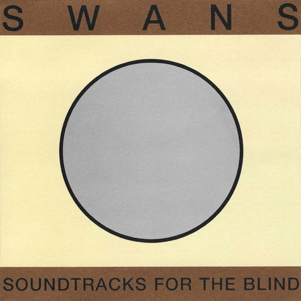
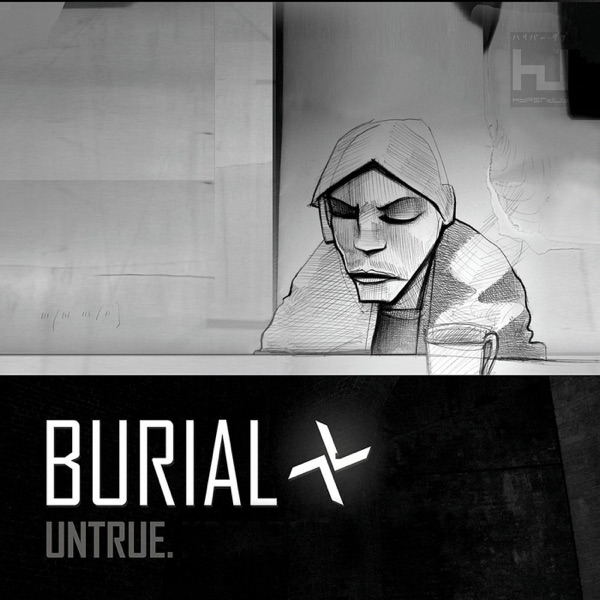
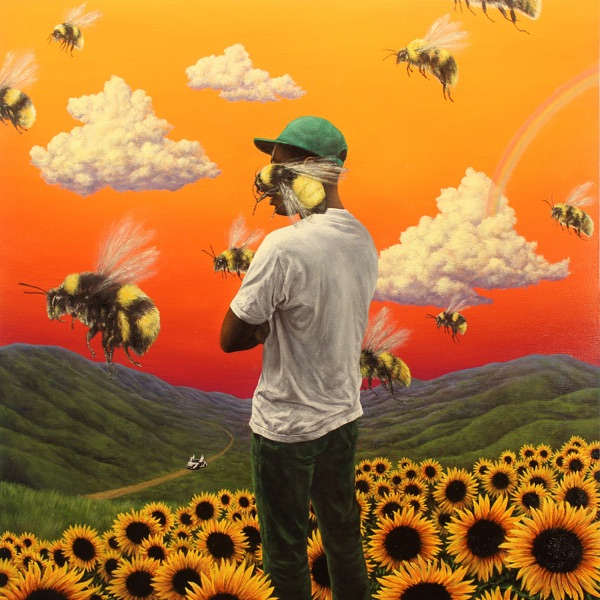
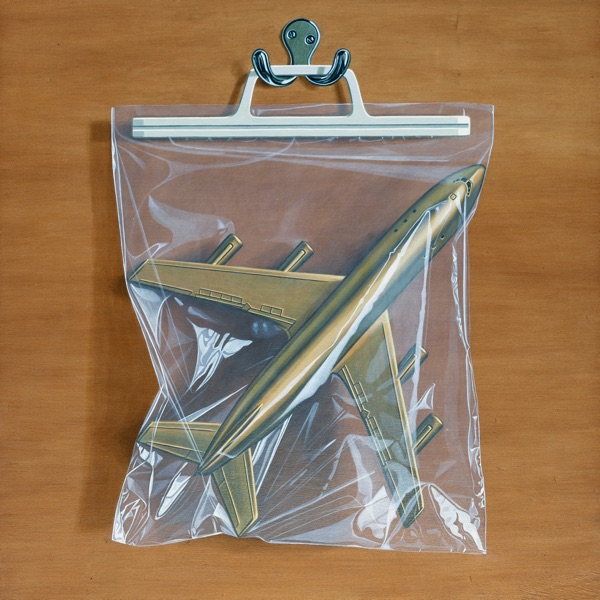
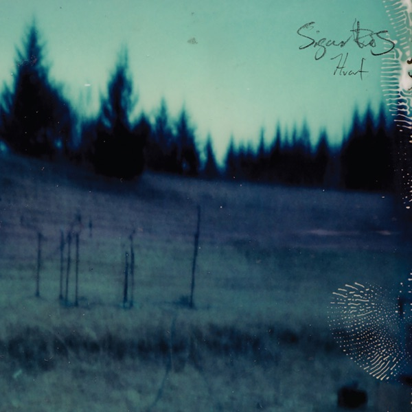
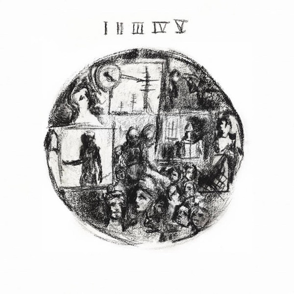
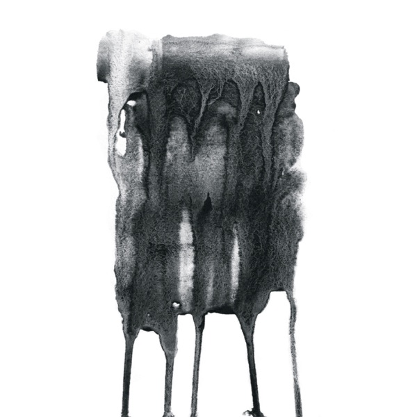

albums list.
i let it in and it took everything
loathe • 14 tracks, 49 minutes • metalcore, ambient

soundtracks for the blind
swans • 26 tracks, 2 hours 22 minutes • experimental rock, post-rock

untrue
burial • 13 tracks, 51 minutes • future garage, ambient

flower boy
tyler, the creator • 14 tracks, 47 minutes • rap, west coast hip-hop, r&b

ants from up there
black country, new road • 10 tracks, 59 minutes • art rock, post-rock
lahai
sampha • 18 tracks, 59 minutes • alternative r&b, electronic

失われた時regret
death's dynamic shroud • 17 tracks, 1 hour 15 minutes • vaporwave, psychedelia, dreampunk
mother melancholia
sóley • 10 tracks, 45 minutes • chamber pop, post-rock, cinema
no title as of 13 february 2024 28,340 dead
godspeed you! black emperor • 6 tracks, 54 minutes • post-rock
mr. morale & the big steppers
kendrick lamar • 19 tracks, 1 hour 19 minutes • rap, west coast hip-hop
átta
sigur rós • 10 tracks, 57 minutes • orchestral, ambient, post-rock

hvarf/heim
sigur rós • 11 tracks, 1 hour 12 minutes • post-rock
you won't get what you want
daughters • 10 tracks, 49 minutes • noise rock
oil of every pearl's un-insides
sophie • 9 tracks, 40 minutes • experimental electronic, edm, alt pop

windswept adan
ichiko aoba • 14 tracks, 50 minutes • ethereal folk, singer/songwriter
florist
florist • 19 tracks, 58 minutes • indie folk, ethereal folk

scrapyard
quadeca • 15 tracks, 46 minutes • art pop, experimental rap
flood dream
leya • 9 tracks, 37 minutes • chamber folk, microtonal harp, experimental violin

what do you want!
acloudyskye • 8 tracks, 49 minutes • electronica, folktronica, post-rock
